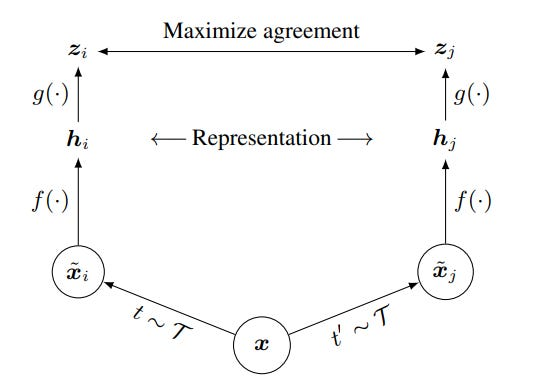
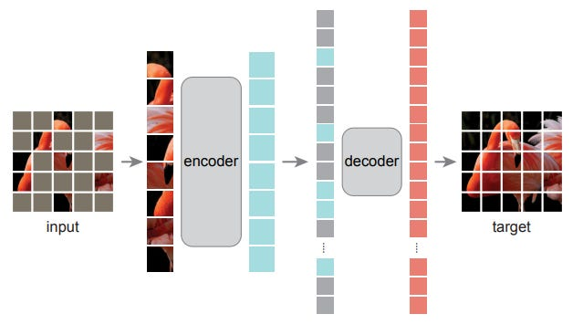
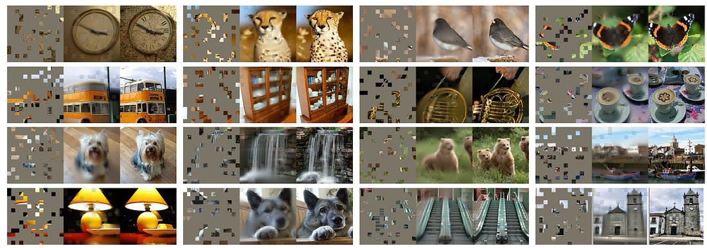
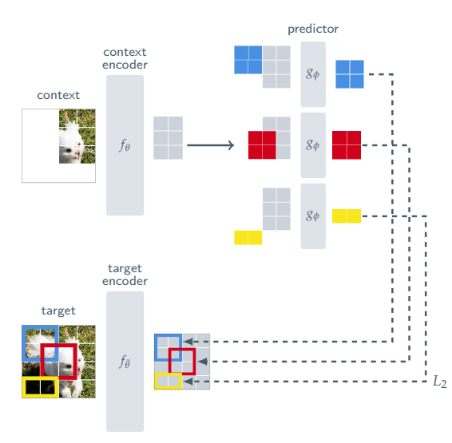
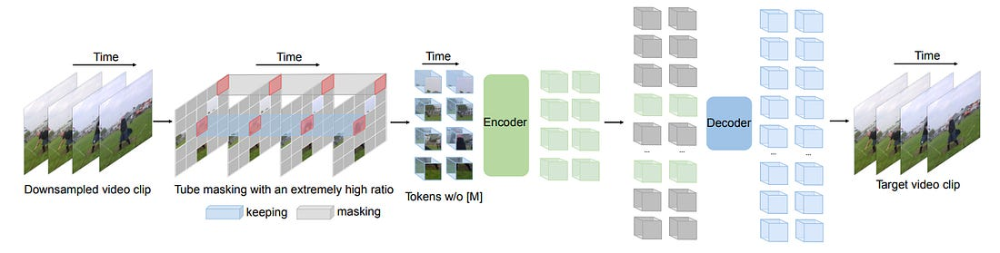
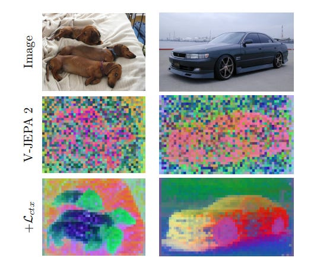
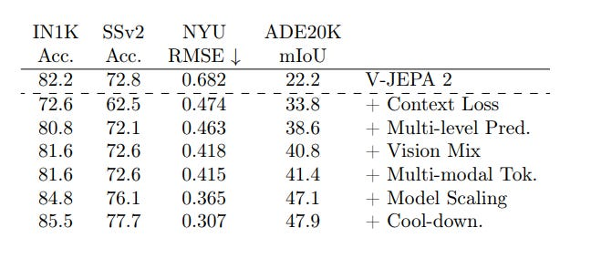

Mahesh Reddy · 10 May 2026
The scale of data on the internet is growing exponentially, yet the vast majority of it remains unannotated. Since supervised learning models for downstream tasks require labeled data, which is expensive and time-consuming to produce, this creates a fundamental bottleneck. Self-supervised learning (SSL) directly addresses this problem: how do we leverage the massive amounts of unlabeled data available on the internet? There has been significant research in this direction, with networks trained under SSL paradigms to exploit large-scale, unannotated data. In this article, we focus on image and video-based self-supervised learning, tracing how each major work introduced new ideas and pushed the field forward.
The goal of any self-supervised learning method is to learn robust representations of data such that the same frozen neural network can be reused for various downstream tasks without ever having seen annotations during pre-training.
Early works on image self-supervised learning used pseudo-labeling as a pretext task, in which multiple augmentations of the same image, such as random cropping, rotation, or color distortion, were generated and passed through an image encoder. The objective was to minimize the difference between the embeddings of the same image augmented views, encouraging the encoder to capture high-level, invariant semantic features and ignore superficial low-level details.
However, a critical failure mode exists: the network can trivially satisfy this objective by outputting a constant vector for every image, causing what is known as representational collapse. To prevent this, rather than only pulling similar views together, we must also push dissimilar samples apart. This is the central idea behind contrastive learning.

Figure 1 from Chen et al. (2020) [1] illustrates a simple contrastive learning framework. Given a training sample \(x\), two augmentations are sampled from the same augmentation family and applied to produce two correlated views. A base encoder \(f(\cdot)\) produces embeddings from these views, and a projection head \(g(\cdot)\) maps them into a space where the contrastive loss is computed. The training objective maximizes agreement between embeddings of the same sample, called positive pairs, while minimizing agreement between embeddings of different samples, negative pairs. After training, the projection head is discarded and the encoder \(f(\cdot)\) is used for downstream tasks via simple linear probing. One practical limitation of this approach is its sensitivity to negative pair selection and its requirement for large batch sizes to expose the model to a sufficient number of negatives during training.
BYOL [2] takes a fundamentally different approach, dispensing with negative pairs entirely. It introduces two networks: an online network and a target network. Both see different augmented views of the same image, and the online network is trained to predict the representation produced by the target network. To avoid representational collapse, which would occur if both networks were updated simultaneously via gradient descent, the target network is updated as an exponential moving average (EMA) of the online network’s weights rather than through direct gradient updates. Conceptually, the target network represents a slowly evolving past version of the online network, and training can be thought of as continuously distilling knowledge from this past version and then surpassing it.
However, augmentation-based approaches introduce their own challenges. The choice of augmentations can embed inductive biases into the encoder, and careful tuning of the augmentation strategy becomes critical to performance. This has motivated a separate line of work rooted in a different idea: masked image modelling. The inspiration comes from BERT [4] in natural language processing, a pretext task in which a language model is trained to predict randomly masked tokens in a sequence, with a masking ratio of around 15%. Since words are discrete tokens, a 15% masking ratio is sufficient; the model cannot trivially reconstruct a missing word by interpolating from its neighbors. Masked Autoencoders (MAE) [5] adapt this idea to images. Rather than using convolutional networks, MAE adopts Vision Transformers (ViT) [6] because their patch-based, non-overlapping tokenization of images provides a natural analogue to token sequences in language, making it straightforward to mask and reconstruct discrete spatial units without the spatial inductive biases baked into CNNs.
Images, however, are continuous signals, and nearby pixels are highly correlated, making it easy for a model to reconstruct a masked region simply by copying from adjacent patches. To counteract this, MAE uses a significantly higher masking ratio of around 75–80%, forcing the model to reason about global image structure rather than relying on local interpolation.

As shown in Figure 2, the MAE architecture works as follows: input image patches are randomly masked, and only the unmasked patches are passed through the encoder. The encoder’s output representations are then combined with learnable mask tokens and fed into a lightweight decoder, which reconstructs the pixel values of the masked patches. Crucially, the decoder is only used during pre-training; after training, it is discarded, and the encoder representations are used directly for downstream tasks. The pixel-level reconstruction objective, while effective, was not universally embraced, as predicting raw pixels is a low-level target that may not align well with high-level semantic representations. This motivated subsequent work exploring alternative prediction targets, most notably the JEPA family of models [7], which instead predict representations in a learned latent space rather than reconstructing pixels directly.

Building on the same teacher-student paradigm, the DINO series was developed.
Here, we focus on DINOv2 [3], which improves upon the original
DINO. DINOv2 maintains a student encoder and a teacher encoder, where the
teacher is an EMA of the student. Training involves two complementary
objectives. The first is the DINO loss, which operates on the [CLS]
token and aligns the global semantic representations produced by augmented views
of the student against those of the teacher, capturing image-level semantics.
The second is the iBOT loss, which operates at the patch level: a subset of
patches is masked before being fed to the student, while the full unmasked image
is passed to the teacher. The objective is to minimize the distribution
divergence between the student’s masked patch representations and the
teacher’s corresponding patch representations, encouraging the model to
learn fine-grained local structure in addition to global semantics.
I-JEPA [7] stems from a broader paradigm shift championed by Yann LeCun, who has argued that pixel-level prediction objectives such as those used in MAE are fundamentally misaligned to learn high-level semantic representations. Reconstructing pixels forces the model to spend capacity modelling low-level, irrelevant detail like texture and lighting. Instead, LeCun's vision is for models to understand the world through compact, abstract representation spaces rather than raw signal spaces, a philosophy that underlies both I-JEPA and his broader framework for world models. Concretely, I-JEPA moves the prediction target from pixel space into a learned latent space. The architecture consists of three components: a context encoder, a predictor, and a target encoder. The context encoder receives only the unmasked patches of an image and produces their representations. The predictor then takes these representations and, conditioned on the positional information of the masked regions, predicts the latent representations of those masked patches. The target encoder, which sees the full unmasked image, produces the ground-truth representations that the predictor is trained to match. The optimization objective is to minimize the distance between the predictor's output and the target encoder's representations for the masked patches. Importantly, the target encoder is updated as an EMA of the context encoder consistent with the teacher-student design seen in BYOL and DINOv2 to prevent collapse. By operating entirely in representation space, I-JEPA avoids the need for hand-crafted augmentations and sidesteps the low-level reconstruction bias of pixel-prediction methods, learning richer semantic features as a result.

Following the same principle as MAE, VideoMAE [8] extends masked autoencoding to video representation learning. The straightforward extension of image masking to video, however, introduces a new challenge: videos are not only spatially redundant like images, but also temporally redundant frames are densely captured, and semantics change slowly over time. This temporal redundancy makes it easy for a model to recover masked content simply by copying from adjacent frames, a shortcut that requires little high-level understanding. Furthermore, the temporal correlation between frames can cause information leakage, where masked spatiotemporal content reappears elsewhere in the clip, allowing the model to reconstruct patches without ever reasoning about the underlying scene.

To address this, VideoMAE introduces a tube masking strategy, where the same spatial positions are masked consistently across all frames, forming a tube through time. This prevents the model from finding unmasked copies of masked content in neighboring frames. Combined with an extremely high masking ratio of 90–95% justified by the heightened redundancy of video over static images, this design forces the model to develop a genuine understanding of spatiotemporal structure rather than relying on local copying. The asymmetric encoder-decoder architecture also means that only a small fraction of unmasked tokens are processed by the encoder, significantly reducing computational cost during pre-training. VideoMAE demonstrates that data quality matters more than data quantity; the model achieves strong downstream performance even when pre-trained on relatively small datasets.
Following the success of generative masked video models, Yann LeCun’s team at Meta developed V-JEPA [9], extending the joint-embedding predictive architecture from images to video. There are three works in the V-JEPA series, each building on and refining the core JEPA idea. The underlying philosophy remains consistent with I-JEPA: rather than reconstructing pixels, the model learns compact, abstract representations of video in latent space. The architecture follows the same three-component design a context encoder that sees only the unmasked patches, a predictor that predicts the latent representations of the masked patches, and a target encoder that sees the complete video and provides the prediction targets.
Where V-JEPA diverges from VideoMAE is in its masking strategy. Rather than tube masking, V-JEPA samples several spatially continuous blocks with varying aspect ratios and repeats them consistently across the entire temporal dimension of the video. The context \(x\) is taken as the complement of these masked blocks. Masking large, temporally consistent spatial regions limits information leakage caused by both spatial and temporal redundancy, and results in a significantly harder prediction task that demands genuine spatiotemporal reasoning.

The V-JEPA series has shown progressive improvements on tasks such as action recognition and action anticipation. As shown in Figure 7, the feature maps produced by V-JEPA 2 [10] are noticeably noisy, reflecting limitations in representation quality. V-JEPA 2.1 [11] addresses this through several architectural and objective-level improvements. First, it introduces a context loss, extending supervision to the unmasked patches in addition to the masked ones, a departure from all prior masked modelling works where the loss was applied exclusively on masked regions. Second, it introduces modality-specific encoders to better handle the distinct characteristics of different input modalities. Third, it adopts a form of deep self-supervision, applying the prediction loss not only on the final layer embeddings but across multiple intermediate layers of the encoder. Both the model and the data were scaled.

Together, as demonstrated in Figure 8, each of these additions contributes incrementally to improved downstream performance, with V-JEPA 2.1 achieving state-of-the-art results across multiple benchmarks.
The evolution of self-supervised visual learning reflects a consistent underlying tension: how do we design a training signal that is hard enough to force meaningful understanding, but not so prescriptive that it bakes in the wrong biases? Contrastive methods answered this by leveraging disagreement between samples, but required careful engineering of negatives and augmentations. Masked modelling shifted the burden to reconstruction, but pixel-level targets proved to be a low-level distraction. The JEPA family reframed the question entirely, rather than asking a model to reconstruct the world, ask it to predict an abstract representation of it. Each step in this progression was not just a new architecture, but a new answer to what a model should be trying to learn in the first place. The downstream applications of these representations are already becoming tangible, with works like DINO-WM [12] and LeWorldModel [13] demonstrating how strong visual SSL representations can serve as the backbone for world models capable of planning and reasoning. This blog covers only a slice of this rapidly evolving field; the goal has been to trace the thread of how each problem gave rise to the next, and how the field has consistently moved toward richer, more abstract, and more transferable representations of the visual world.